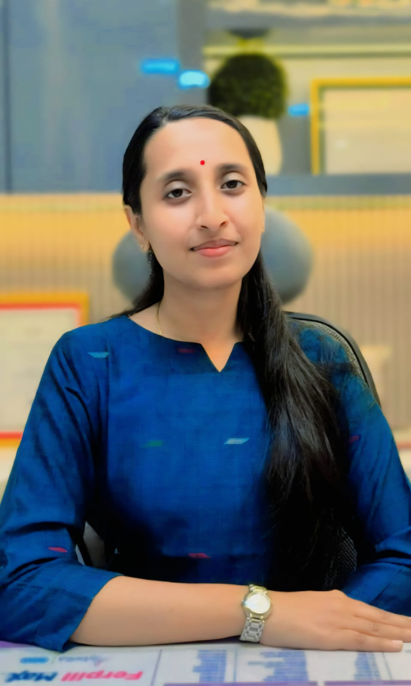

Dr. Khushboo Agarwal is a dedicated fertility specialist and Consultant Gynaecologist at Maatritva IVF, helping couples navigate IVF, ICSI, and complex infertility with compassionate, evidence-based care.

Fertility & ICSI Expert
"Every couple deserves a personalised path to parenthood. My goal is to bring the best of modern IVF and ICSI science with deep compassion — so every patient feels heard and cared for at Maatritva."
MBBS and MS (OBG) qualified, with advanced fellowship training in Reproductive Medicine, IVF, and ICSI — bringing academic rigour to every clinical decision.
Proficient in the full spectrum of Assisted Reproductive Technology — from ICSI and IVF to blastocyst culture and embryo transfer — for even the most complex infertility cases.
As a Consultant Gynaecologist, she offers comprehensive womens health services — from infertility management to routine gynaecological care — always centred on the patient's wellbeing.
Dr. Khushboo Agarwal specialises in the full spectrum of infertility evaluation and treatment. Her clinical expertise spans:
As a Consultant Fertility Specialist & Gynaecologist at Maatritva IVF Fertility & Healthcare, Kolkata, Dr. Khushboo Agarwal brings a uniquely holistic approach to reproductive medicine. She was trained at premier institutions and has refined her expertise in IVF treatment in Kolkata, ICSI, and the management of all forms of female and male-factor infertility.
Patients seeking an IVF specialist in Kolkata or a skilled Gynaecologist often choose Dr. Khushboo for her meticulous approach to diagnosis. She believes no two infertility journeys are identical, and therefore tailors every IVF or ICSI cycle to the individual patient's ovarian reserve, hormonal profile, and clinical history.
Her work at Maatritva IVF complements the clinic's state-of-the-art IVF laboratory in Newtown, Kolkata — where AI-assisted embryo selection, blastocyst culture, and Preimplantation Genetic Testing (PGT-A) maximise success rates. Whether you are exploring ICSI for male factor infertility, need expert guidance from a Gynaecologist for PCOS or endometriosis, or are preparing for your first IVF cycle, Dr. Khushboo Agarwal offers a compassionate, evidence-based consultation.
Book a consultation with Dr. Khushboo Agarwal today and take the first step on your journey to parenthood.
Complete IVF cycle management — from stimulation to embryo transfer — for couples struggling with infertility.
Precision ICSI — intracytoplasmic sperm injection — for severe male-factor infertility and low sperm parameters.
Comprehensive infertility work-up and treatment, covering unexplained, ovulatory, tubal, and male-factor causes.
Expert Gynaecologist services: PCOS, endometriosis, fibroids, menstrual disorders, and all aspects of womens reproductive health.
A structured, personalised approach to achieve the best IVF and ICSI outcomes.
In-depth discussion of your medical history, infertility timeline, and previous reports with Dr. Khushboo.
Advanced hormonal profiling, ultrasound, semen analysis, and genetic screening to pinpoint the cause of infertility.
A customised protocol — IVF, ICSI, IUI, or hormonal therapy — tailored precisely to your physiology.
Continuous pregnancy monitoring and gynaecological care through to a safe, joyful delivery.
About IVF, ICSI, infertility treatment, and gynaecology care